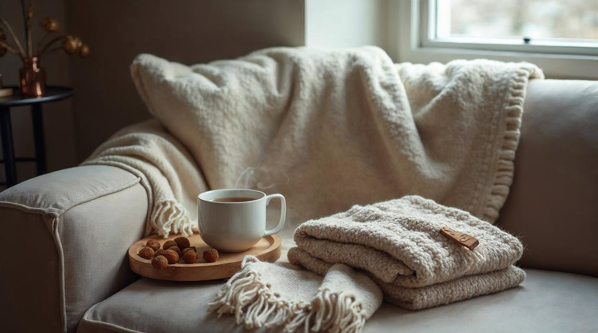
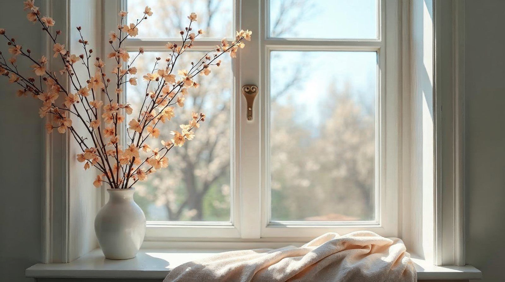
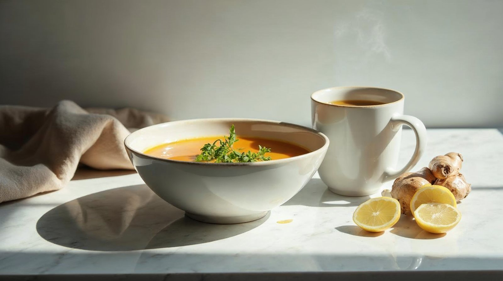

이종호 한의사 감수좋은꿈참사랑한의원 대표원장 (한의사 면허번호 19769)발행 2026-11-26 · 수정 2026-11-26
이 글의 차례
아침 출근길에는 얇은 외투로도 손이 시린데, 점심때가 되면 햇볕이 따가워 외투를 벗어 듭니다. 저녁 퇴근길에는 다시 찬바람이 목덜미로 파고듭니다. 그렇게 며칠을 보내고 나면 어김없이 몸이 으슬으슬하고 어깨와 허리가 쑤시기 시작합니다.
진료실에서 "계절만 바뀌면 몸살을 한 번씩 앓아요"라는 말씀을 자주 듣습니다. 봄이 오는 길목에 한 번, 가을이 깊어질 때 한 번, 마치 정해진 행사처럼 찾아온다고 하십니다. 가족들조차 "또 환절기 왔구나" 하며 알아챈다는 분도 계십니다.
환절기 몸살은 감기 바이러스 때문만이 아니라, 하루에도 크게 오르내리는 기온과 건조해진 공기에 몸이 적응하느라 힘을 많이 쓰는 데서 비롯되는 경우가 많습니다. 그 와중에 잠이나 식사가 흐트러져 있으면 몸은 더 쉽게 무너집니다.
저는 환절기 몸살을 단순히 약을 먹고 지나가는 일로만 보지 않습니다. 해마다 비슷한 시기에 반복된다면, 그 시기 몸이 어떤 부분에서 버티기 힘들어하는지 살펴볼 좋은 기회라고 생각합니다.
환절기 몸살은 어떤 모습으로 오나요?
가장 흔한 모습은 으슬으슬 한기가 들면서 온몸이 무겁고 쑤시는 느낌입니다. 등과 어깨, 허리, 허벅지가 두들겨 맞은 듯 뻐근하고, 머리가 묵직하며 기운이 쭉 빠집니다. 목이 칼칼하거나 코가 막히는 증상이 함께 오기도 합니다.
열은 없거나 미열 정도에 그치는 경우가 많습니다. 하루 이틀 푹 쉬면 가라앉기도 하지만, 무리하면 일주일 넘게 질질 끌거나 감기로 넘어가기도 합니다. 몸살이 지나간 뒤에도 입맛이 돌아오지 않고 피로가 오래 남는 분도 계십니다.
어떤 분은 몸살보다 목과 코가 먼저 탈이 나고, 어떤 분은 소화가 먼저 흔들립니다. 같은 환절기라도 내 몸이 어느 쪽부터 신호를 보내는지 알아 두시면 미리 챙기기가 수월해집니다.
왜 계절이 바뀔 때 몸살이 잦을까요
첫 번째 이유는 큰 일교차입니다. 우리 몸은 체온을 일정하게 지키려고 날씨에 맞춰 혈관을 조였다 풀었다 하고, 땀을 냈다 멈췄다 합니다. 하루 안에 기온이 크게 오르내리면 이 조절에 쓰는 힘이 많아지고, 그만큼 몸이 쉽게 지칩니다.
두 번째 이유는 건조한 공기입니다. 가을과 봄에는 공기가 마르며 코와 목의 점막도 함께 건조해집니다. 점막은 바깥 먼지와 바이러스를 걸러 내는 첫 번째 문인데, 이 문이 마르면 감기 바이러스가 들어오기 쉬워집니다.
세 번째 이유는 옷차림과 생활의 엇박자입니다. 아침에는 춥게, 낮에는 덥게 입게 되기 쉽고, 땀이 난 채로 찬바람을 맞기도 합니다. 냉방과 난방이 오락가락하는 실내도 몸을 헷갈리게 합니다.
네 번째 이유는 몸의 여유입니다. 같은 날씨를 겪어도 잠이 부족하고 끼니가 불규칙하며 일이 몰린 분은 훨씬 쉽게 몸살을 앓습니다. 계절이 바뀌는 시기가 학기 초나 연말처럼 바쁜 때와 겹치면 더 그렇습니다.
감기, 독감과는 어떻게 다른가요?
감기는 콧물, 재채기, 목 따가움 같은 코와 목의 증상이 중심이고, 열은 대개 높지 않습니다. 환절기 몸살은 이런 감기 증상과 함께 오기도 하고, 감기 증상 없이 몸이 쑤시고 한기가 드는 느낌만 오기도 합니다.
독감은 갑자기 높은 열이 오르고, 온몸이 심하게 아프며, 기운이 바닥까지 떨어지는 경우가 많습니다. 하루 이틀 만에 일상생활이 어려울 정도로 아프다면 독감일 가능성을 생각하고 내과에서 검사를 받아 보시는 것이 좋습니다.
환절기에는 비염이나 알레르기도 함께 심해집니다. 맑은 콧물과 재채기가 아침저녁으로 반복되고 열이나 몸살 기운이 없다면 알레르기 쪽을 먼저 살펴봅니다. 이런 구분은 스스로 단정하기보다 진찰로 확인하는 것이 좋습니다.
해마다 반복된다면 살펴볼 것
환절기마다 몸살을 앓는 분들에게는 몇 가지 공통점이 있는 경우가 많습니다. 평소 손발이 차고 추위를 많이 타는 분, 땀을 쉽게 흘리는 분, 잠이 얕고 피로가 잘 풀리지 않는 분, 소화가 약해 끼니를 자주 거르는 분입니다.
이런 분들은 몸이 날씨 변화에 대응할 여유가 넉넉하지 않은 상태로 환절기를 맞이하게 됩니다. 그래서 같은 찬바람에도 남보다 먼저 몸살을 앓습니다. 몸살이 지나간 뒤 회복도 더딘 편입니다.
해마다 같은 시기에 반복된다면, 몸살이 오기 전부터 그 시기를 준비해 보는 것이 좋습니다. 환절기 몇 주 전부터 잠과 식사를 조금 더 챙기고, 옷차림을 미리 바꾸는 것만으로도 몸살의 횟수와 강도가 달라질 수 있습니다.

몸살 기운이 막 시작될 때
목이 칼칼하고 등이 으슬으슬한 첫 신호가 오면, 그날은 일을 조금 줄이고 일찍 쉬는 것이 가장 좋습니다. 몸살은 시작될 때 쉬어 주면 짧게 지나가고, 무리하면 길어지는 경우가 많습니다.
따뜻한 물을 조금씩 자주 드시고, 미지근한 물로 샤워한 뒤 머리를 바로 말리세요. 목에는 얇은 스카프를 두르고, 잠자리 온도는 너무 덥지도 춥지도 않게 맞춥니다. 땀을 억지로 빼려고 두꺼운 이불을 덮고 자는 것은 오히려 몸을 지치게 할 수 있습니다.
입맛이 없더라도 죽이나 맑은 국처럼 소화가 쉬운 음식으로 끼니를 이어 가세요. 몸이 회복하려면 재료가 필요합니다. 기름지거나 찬 음식은 몸살이 가라앉을 때까지 잠시 미뤄 두시길 권합니다. 따뜻한 생강차나 대추차처럼 몸을 데우는 차를 곁들이셔도 좋습니다.

봄 환절기와 가을 환절기는 어떻게 다른가요?
봄 환절기에는 따뜻해지는 낮과 아직 쌀쌀한 아침이 엇갈리고, 꽃가루와 황사, 미세먼지가 더해집니다. 그래서 몸살과 함께 코와 눈, 목이 먼저 예민해지는 분이 많습니다. 외출 뒤 얼굴과 손을 씻고 옷을 털어 주는 습관이 도움이 될 수 있습니다.
가을 환절기에는 공기가 빠르게 마르고 기온이 점점 내려갑니다. 여름 동안 더위와 냉방에 지친 몸이 충분히 회복되지 않은 채 추위를 맞이하면 몸살이 오기 쉽습니다. 늦여름부터 찬 음료와 냉방을 조금씩 줄여 가는 것이 가을 준비의 시작입니다.
겨울로 넘어가는 늦가을에는 난방이 시작되며 실내가 더 건조해집니다. 아침에 일어났을 때 목이 따갑고 코가 바싹 마른 느낌이 든다면, 잠자리 근처에 젖은 수건을 널어 두거나 가습기를 써서 습도를 맞춰 보세요.
아이와 어르신은 조금 더 챙겨 주세요
아이들은 체온 조절이 아직 서툴러 환절기에 열과 감기가 잦습니다. 등원이나 등교 때 겉옷을 하나 더 챙겨 주시고, 땀을 흘린 뒤에는 젖은 옷을 바로 갈아입히세요. 아이가 평소보다 많이 처지거나 잘 먹지 못한다면 소아청소년과 진료를 먼저 받아 보시는 것이 좋습니다.
어르신은 몸살 기운을 크게 표현하지 않으시는 경우가 많습니다. 평소보다 입맛이 줄고 자꾸 누우려 하시거나, 기운이 없어 보이신다면 몸살이나 감기의 신호일 수 있습니다. 물을 적게 드시는 편이라면 따뜻한 물이나 국으로 자주 챙겨 드려 주세요.
먼저 이렇게 여쭙니다
처음 오시면 저는 대략 이런 순서로 여쭙니다. 미리 생각해 오시면 이야기가 수월해집니다.
- 몸살이 언제 시작되었고, 열은 있었나요?
- 목, 코, 기침 같은 증상이 함께 있나요?
- 해마다 비슷한 시기에 반복되나요?
- 평소 손발이 차거나 땀을 많이 흘리시나요?
- 최근 잠과 식사, 일의 양은 어떠신가요?
- 드시는 감기약이나 다른 약이 있나요?
이 질문들의 답을 나란히 놓으면, 지금 몸살이 감기와 함께 온 것인지, 몸의 여유가 줄어든 상태에서 날씨 변화가 겹친 것인지를 가늠하는 데 도움이 됩니다.

일상에서 먼저 해 볼 수 있는 것
환절기 몸살을 줄이는 핵심은 몸이 날씨 변화에 대응할 여유를 남겨 두는 것입니다. 거창한 보양보다 매일의 작은 습관이 더 큰 차이를 만듭니다.
- 아침저녁에 입고 벗기 쉬운 겉옷을 챙기기
- 목과 아랫배를 따뜻하게, 얇은 스카프 활용하기
- 실내 습도를 40~60% 정도로 맞추기
- 따뜻한 물을 하루 여러 번 나눠 마시기
- 잠드는 시각을 일정하게, 7시간 안팎 자기
- 외출 뒤 손 씻기, 코와 목을 촉촉하게 유지하기
옷차림은 두꺼운 옷 한 벌보다 얇은 옷 여러 겹이 좋습니다. 아침에는 겹쳐 입고, 낮에 더우면 한 겹씩 벗어 땀이 나지 않도록 조절하세요. 땀이 난 채로 찬바람을 맞는 것이 몸살을 부르는 흔한 길입니다.
운동은 몸살 기운이 없을 때 꾸준히 하는 것이 좋습니다. 가볍게 숨이 찰 정도의 걷기를 하루 30분 정도 이어 가면 몸이 기온 변화에 대응하는 힘을 기르는 데 도움이 될 수 있습니다. 다만 몸살 기운이 있는 날은 운동을 쉬고 회복에 집중하세요.
식사는 제철 채소와 단백질 반찬을 고르게 챙기고, 끼니를 거르지 않는 것이 기본입니다. 찬 음료를 습관처럼 드시는 분이라면 환절기에는 미지근한 물이나 따뜻한 차로 바꿔 보세요.
몸살이 지나간 뒤의 회복기
몸살이 가라앉았다고 바로 평소 속도로 돌아가면, 며칠 뒤 다시 몸이 처지는 일이 흔합니다. 열과 쑤심이 사라진 뒤에도 사흘에서 일주일 정도는 일과 운동의 양을 평소보다 조금 줄여 회복할 시간을 주세요.
이 시기에는 잠을 넉넉히 자고, 끼니를 거르지 않으며, 소화가 쉬운 단백질 반찬을 챙기는 것이 좋습니다. 입맛이 늦게 돌아오는 분은 한 번에 많이 드시기보다 조금씩 자주 드셔 보세요.
한의원에서 함께 살필 수 있는 경우
- 계절이 바뀔 때마다 몸살을 앓고 회복이 더딘 경우
- 몸살이 지나간 뒤에도 기운과 입맛이 돌아오지 않는 경우
- 손발이 차고 추위를 많이 타며 쉽게 지치는 경우
- 감기는 지나갔는데 목과 어깨, 등이 계속 쑤시는 경우
- 환절기마다 잠이 얕아지고 소화가 흔들리는 경우
좋은꿈참사랑한의원에 오시면 먼저 아래 '먼저 확인이 필요한' 신호가 없는지부터 봅니다. 그다음 맥을 짚고, 손발 온도와 땀, 잠, 소화를 여쭤보며, 굳은 목과 어깨, 등을 직접 만져 확인합니다.
진찰한 내용을 바탕으로 침이나 물리치료 같은 관리와 생활에서 바꿔 볼 것 하나를 정합니다. 몸살 뒤 회복이 더디거나 해마다 반복된다면 한약 상담을 함께 할 수 있으며, 드시는 약을 모두 확인한 뒤 신중히 정합니다. 내과에서 처방받은 약은 상의 없이 멈추지 않습니다.
열이 높거나 기침과 가래가 오래 이어진다면 내과나 이비인후과 진료를 먼저 받으시고, 한의원에서는 그 사이의 몸살 기운과 회복을 함께 살피면 됩니다. 두 곳이 각자의 자리에서 돕는다고 생각해 주세요.
이렇게 기록해 오시면 상담이 쉬워집니다
환절기 몸살은 해마다 반복되는 경우가 많아서, 한 번 적어 두면 다음 해를 준비하는 데 큰 도움이 됩니다. 몸살이 올 때마다 간단히 적어 보세요.
- 몸살이 시작된 날짜와 그 무렵 날씨
- 열, 목, 코, 기침 등 함께 온 증상
- 몸살이 이어진 기간
- 그 무렵의 잠, 식사, 일의 양
- 드신 약과 효과
- 몸살 뒤 기운이 돌아오기까지 걸린 시간
이 기록이 두세 해 쌓이면 "가을 학기 초마다", "11월 첫 추위 무렵에"처럼 내 몸이 약해지는 시기가 보입니다. 그 시기 몇 주 전부터 잠과 식사를 조금 더 챙기는 것이 가장 든든한 준비입니다.
몸살이 없이 지나간 계절도 함께 적어 두세요. 그해에는 무엇이 달랐는지 비교해 보면, 내 몸에 맞는 환절기 준비법이 조금씩 또렷해집니다.
계절과 사이좋게 지내기
계절이 바뀌는 것은 막을 수 없지만, 그 변화에 몸이 덜 놀라도록 준비할 수는 있습니다. 환절기 몸살은 몸이 지금 조금 더 돌봄이 필요하다고 알려 주는 신호입니다.
이번 환절기에는 한 가지만 챙겨 보세요. 아침저녁 겉옷 하나, 따뜻한 물 한 잔, 일정한 잠 시각 가운데 하나면 충분합니다. 다음에 오시면 이번 계절을 어떻게 지나왔는지 함께 이야기 나누겠습니다.
이런 증상은 먼저 확인이 필요합니다
- 숨이 차고 가슴이 아프거나 높은 열이 사흘 넘게 내리지 않는 경우
- 목이 뻣뻣해 고개를 숙이기 어렵거나 의식이 흐리고 입술이 파래지는 경우
이런 신호가 있으면 한의원보다 가까운 병원이나 응급실을 먼저 찾으세요.
함께 읽으면 좋은 글
- 어른인데 감기를 달고 살 때, 면역력이 떨어진 건지 무엇부터 살피나요?
- 감기나 독감은 지나갔는데 기운이 돌아오지 않고 몸이 처질 때는 어떻게 살피나요?
- 환절기에 목이 건조하고 칼칼할 때는 어떻게 관리하나요?
- 환절기 아침에 공원을 걷고 나면 재채기와 맑은 콧물이 쏟아질 때는 어떻게 살피나요?
- 여름에 에어컨 바람을 오래 쐬면 머리가 아프고 몸살처럼 쑤시는 냉방병은 어떻게 살피나요?

여쭙는 것
- 몸살이 언제 시작되었고, 열은 있었나요?
- 목, 코, 기침 같은 증상이 함께 있나요?
- 해마다 비슷한 시기에 반복되나요?
생활에서 해 볼 것
- 아침저녁에 입고 벗기 쉬운 겉옷을 챙기기
- 목과 아랫배를 따뜻하게, 얇은 스카프 활용하기
- 실내 습도를 40~60% 정도로 맞추기
한의원에서 함께 살필 것
- 계절이 바뀔 때마다 몸살을 앓고 회복이 더딘 경우
- 몸살이 지나간 뒤에도 기운과 입맛이 돌아오지 않는 경우
- 손발이 차고 추위를 많이 타며 쉽게 지치는 경우
먼저 확인이 필요한 신호
- 숨이 차고 가슴이 아프거나 높은 열이 사흘 넘게 내리지 않는 경우
- 목이 뻣뻣해 고개를 숙이기 어렵거나 의식이 흐리고 입술이 파래지는 경우
한눈에 보는 표
| 구분 | 핵심 |
|---|---|
| 여쭙는 것 | 몸살이 언제 시작되었고, 열은 있었나요? 목, 코, 기침 같은 증상이 함께 있나요? |
| 생활에서 해 볼 것 | 아침저녁에 입고 벗기 쉬운 겉옷을 챙기기 목과 아랫배를 따뜻하게, 얇은 스카프 활용하기 |
| 한의원에서 함께 살필 것 | 계절이 바뀔 때마다 몸살을 앓고 회복이 더딘 경우 몸살이 지나간 뒤에도 기운과 입맛이 돌아오지 않는 경우 |
| 먼저 확인이 필요한 신호 | 숨이 차고 가슴이 아프거나 높은 열이 사흘 넘게 내리지 않는 경우 목이 뻣뻣해 고개를 숙이기 어렵거나 의식이 흐리고 입술이 파래지는 경우 |
자주 묻는 질문
환절기 몸살에 감기약을 먹어도 되나요?
증상에 맞는 감기약은 약사나 의사와 상의해 드실 수 있습니다. 한의원 진료를 함께 받으신다면 드시는 약 이름을 알려 주세요. 한약을 상의할 때도 그 약을 확인하고 신중히 정합니다.
몸살 기운이 있을 때 한의원에 가도 되나요?
열이 높지 않고 몸살 기운이 중심이라면 상담하실 수 있습니다. 열이 높거나 독감이 의심된다면 내과 진료를 먼저 받으시고, 회복기에 오셔도 괜찮습니다.
환절기마다 보약을 먹어야 하나요?
모든 분께 필요한 것은 아닙니다. 해마다 몸살이 반복되고 회복이 더딘 분이라면 진찰 뒤 한약 상담을 함께 할 수 있습니다. 먼저 잠과 식사, 옷차림을 챙기는 것이 기본입니다.
땀을 쭉 빼면 몸살이 빨리 지나가나요?
두꺼운 이불을 덮고 억지로 땀을 빼면 오히려 물이 빠지고 몸이 더 지칠 수 있습니다. 적당히 따뜻하게 쉬면서 물을 조금씩 자주 드시는 편이 좋습니다.
좋은꿈참사랑한의원은 재진 때 지난번 이야기부터 이어서 여쭙니다. 진료시간과 예약은 오시는 길에서 확인하세요.
어디서 상담받을 수 있나요?
좋은꿈참사랑한의원은 서울 동작구 만양로2길 2 신성빌딩 3층·5층(서울 동작구 상도동, 7호선 상도역 3번 출구 근처)에 있습니다. 한의사 3명(이종호 대표원장, 조영기 수석진료원장, 정원영 진료원장)이 진료합니다. 진료시간은 평일 09:30~20:00(점심 13:00~14:00), 토·일·공휴일 09:30~15:00이며, 방문 전 전화로 확인을 권합니다. 예약은 네이버 예약, 카카오톡 상담, 전화 02-815-7510로 받습니다.
이 글은 일반적인 건강 정보이며 개인의 진단이나 치료를 대신하지 않습니다. 증상이 있거나 복용 중인 약이 있다면 진료를 통해 확인하세요. 치료 효과는 개인마다 다를 수 있습니다.
작성 기준: 일반적으로 알려져 있는 건강 정보를 참고해 정리했습니다(대표원장 감수). 증상 기록은 1~2주 동안 하루 1회, 비슷한 시간에 적어 오시면 지난 상태와 비교하기 쉽습니다.